👆 이 내용은 버튼 따라 하는 실습으로도 있어요. 처음이라면 실습으로 직접 해 보고, 이 글은 복습할 때 보세요. 실습 시작하기 →
※ 글 속 그림은 따라 하기 쉽도록 그린 예시입니다. 실제 앱 화면과 모양·글자가 조금 다를 수 있어요.
Claude Code가 뭔가요?
컴퓨터에게 말로 일을 시키는 AI 비서입니다. "이 폴더 파일 정리해줘"처럼 평소 말투로 부탁하면, 내 컴퓨터의 파일을 직접 만들고 고쳐 줍니다.
이 과정에서는 검은 글자 창 없이, 일반 프로그램처럼 생긴 Claude 데스크톱 앱으로 씁니다. 버튼을 눌러 쓰기 때문에 처음 쓰는 분께 가장 쉬운 방법이에요.
0. 먼저 준비할 것
- 컴퓨터: Windows 또는 Mac
- 유료 Claude 계정(Pro 이상): claude.ai에서 가입한 뒤, 화면의 업그레이드 메뉴에서 Pro 이상을 구독합니다.
1. 연습용 폴더 만들기
처음에는 아무 파일도 없는 빈 폴더에서 연습하는 것이 안전합니다.
- 바탕화면의 빈 곳에 마우스 오른쪽 버튼을 누릅니다. (Mac 트랙패드는 두 손가락으로 함께 누르기)
- 새로 만들기 → 폴더를 누릅니다. (Mac은 새로운 폴더)
- 폴더 이름을 연습으로 정합니다.
2. 앱 내려받기
- 인터넷 창(브라우저)을 열고 맨 위 주소 칸에 claude.ai/download 를 입력하고 Enter.
- 내 컴퓨터에 맞는 버튼을 누릅니다. Windows는 Download for Windows, Mac은 Download for macOS.
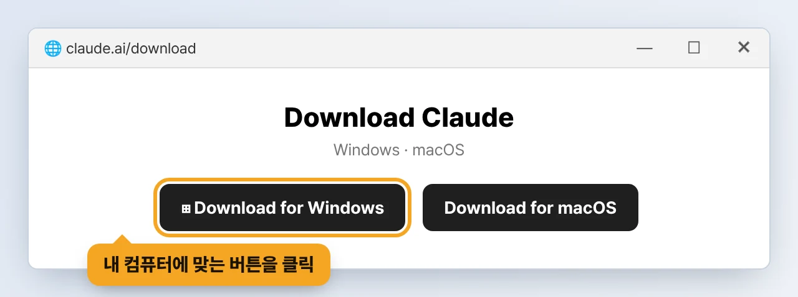
3. 설치하기
Windows
- 내려받기가 끝나면 브라우저 위쪽(또는 아래쪽)의 내려받은 파일을 누르거나, 다운로드 폴더에서 Claude 설치 파일을 두 번 클릭합니다.
- "이 앱이 디바이스를 변경할 수 있도록 허용하시겠어요?"가 나오면 예.
- 설치가 끝나면 Claude 앱이 저절로 열립니다.
Mac
- 다운로드 폴더의 Claude 파일(.dmg)을 두 번 클릭합니다.
- 나온 창에서 Claude 아이콘을 Applications(응용 프로그램) 폴더로 끌어다 놓습니다.
- 응용 프로그램에서 Claude를 두 번 클릭해 엽니다. "인터넷에서 다운로드한 앱"이라는 경고가 나오면 열기.
4. 로그인
앱이 열리면 로그인 화면이 나와요. 유료로 구독한 계정으로 로그인하세요. (Google로 계속하기, 또는 이메일)
5. Code 탭 열기
앱 왼쪽 위에 Chat · Cowork · Code 같은 탭이 있어요. 그중 Code를 누르면 Claude Code 화면이 나와요.
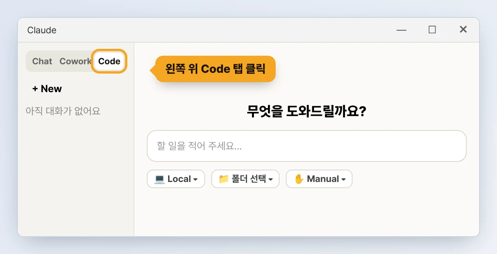
6. 일할 폴더 고르기
Claude Code는 고른 폴더 안에서만 일해요. 그래서 연습 폴더를 골라 줍니다.
- 입력 칸 아래 첫 번째 버튼이 Local(내 컴퓨터)인지 확인합니다. 아니라면 눌러서 Local을 고르세요.
- 그 옆의 폴더 버튼을 누르고 Open folder…를 누릅니다.
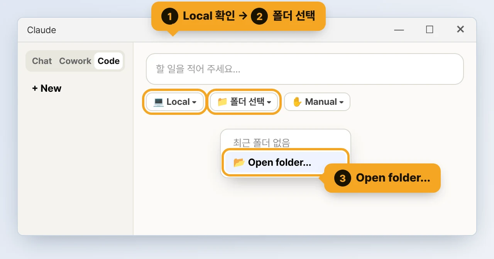
- 폴더 고르는 창이 열리면 왼쪽에서 바탕 화면을 누릅니다.
- 연습 폴더를 한 번 클릭하고, 아래 폴더 선택(Mac은 열기)을 누릅니다.
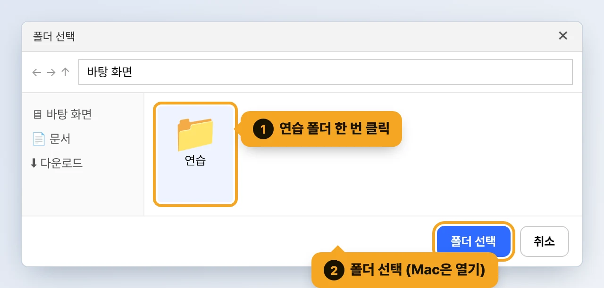
7. 첫 작업 시켜 보기
입력 칸에 한국어로 그대로 적고 Enter.
할일.txt 파일을 만들고 오늘 할 일 예시를 3개 적어줘Claude가 파일을 만들기 전에 허락을 물어요. 무엇을 만들지 보여 주는 카드가 나오는데, 초록색 줄이 새로 들어갈 내용이에요. 내용을 보고 허용 버튼을 누르세요.
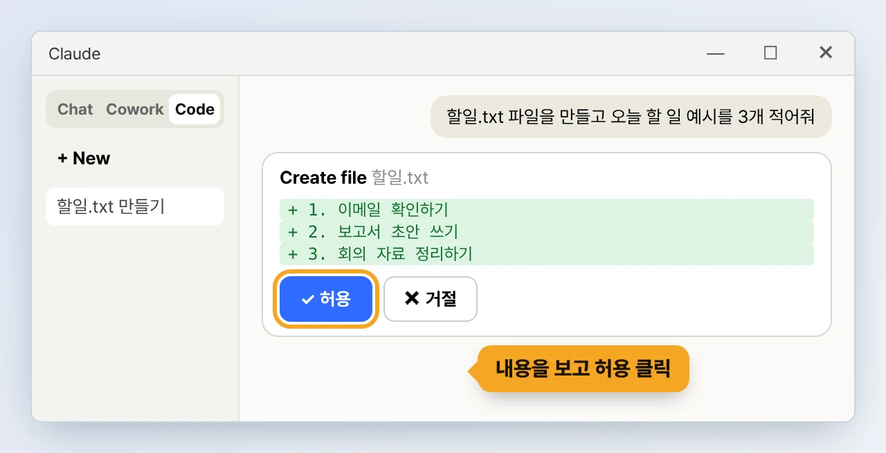
버튼 이름은 앱 버전에 따라 Allow, Accept 같은 영어로 보일 수 있어요. 허락하는 쪽(보통 파란색) 버튼을 누르면 됩니다.
8. 결과 눈으로 확인하기
바탕화면의 연습 폴더를 열어 보세요. 할일.txt 파일이 생겨 있습니다.

9. 끝내기
그냥 앱을 닫으면 됩니다. 오늘 대화는 앱 왼쪽 목록에 남아 있어서, 다음에 앱을 열고 클릭하면 이어서 할 수 있어요. (자세한 건 다음 글에서)
잘 안 될 때
| 이런 경우 | 이렇게 하세요 |
|---|---|
| Code 탭이 안 보여요 | 유료(Pro 이상) 계정으로 로그인했는지 확인하세요. 앱을 최신 버전으로 업데이트한 뒤 다시 열어 보세요. |
| "Git is required"(Git이 필요해요)가 나와요 | Windows라면 화면의 안내 링크로 Git for Windows를 설치한 뒤 앱을 다시 여세요. |
| 파일이 다른 곳에 생겼어요 | 6번에서 연습 폴더를 골랐는지 확인하세요. Claude에게 "할일.txt 어디에 만들었어?"라고 물어봐도 돼요. |
| 허락을 안 묻고 바로 만들어요 | 입력 칸 아래 허락 방식이 Manual이 아닐 수 있어요. 눌러서 Manual로 바꾸세요. |
검은 글자 창(터미널)으로 쓰는 방법이 궁금하다면 터미널 과정(심화)을 보세요.
다음 글에서는 만든 파일을 고치게 하면서, 바뀌는 내용을 확인하는 법을 배웁니다.
※ The pictures in this guide are illustrations to make it easy to follow. The real app may look a little different or use different words.
What is Claude Code?
An AI assistant you give jobs to in plain words. Ask it something like "tidy up the files in this folder" and it creates and edits files on your computer for you.
In this course you use it in the Claude desktop app, which looks like any other program, with no black text window. You use it by clicking buttons, so it's the easiest way to start.
0. What you need first
- A computer: Windows or Mac
- A paid Claude account (Pro or higher): sign up at claude.ai, then subscribe to Pro or higher from the Upgrade menu.
1. Make a practice folder
To start, it's safest to practice in an empty folder with no files in it.
- Click the right mouse button on an empty spot of your desktop. (On a Mac trackpad, press with two fingers together.)
- Click New → Folder. (On a Mac, New Folder)
- Name the folder Practice.
2. Download the app
- Open your web browser, type claude.ai/download in the address bar at the top and press Enter.
- Click the button for your computer: Download for Windows or Download for macOS.
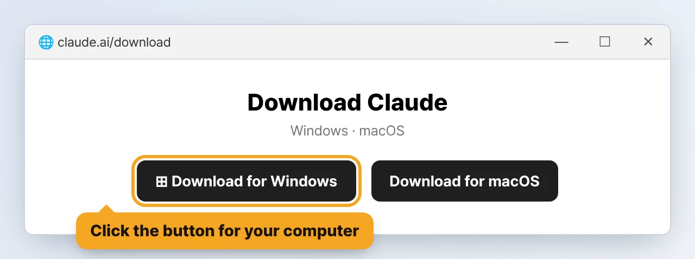
3. Install it
Windows
- When the download finishes, click the downloaded file at the top (or bottom) of the browser, or double-click the Claude installer in your Downloads folder.
- If it asks "Do you want to allow this app to make changes to your device?", click Yes.
- When it's installed, the Claude app opens by itself.
Mac
- Double-click the Claude file (.dmg) in your Downloads folder.
- In the window that opens, drag the Claude icon into the Applications folder.
- Double-click Claude in Applications to open it. If it warns that the app was downloaded from the internet, click Open.
4. Sign in
When the app opens you'll see a sign-in screen. Sign in with your paid account (Continue with Google, or email).
5. Open the Code tab
At the top left of the app there are tabs such as Chat · Cowork · Code. Click Code to open the Claude Code screen.
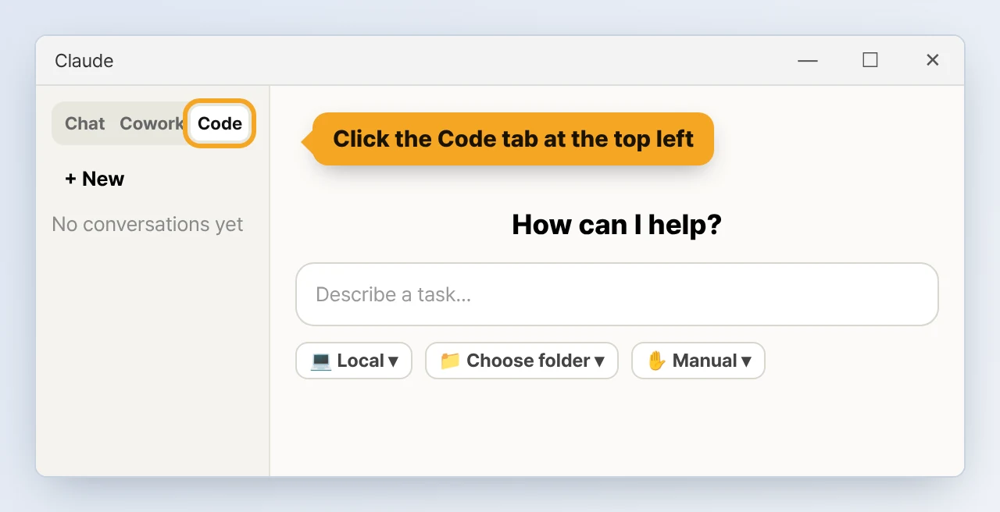
6. Choose the folder to work in
Claude Code works only inside the folder you choose. So choose your practice folder.
- Check that the first button under the typing box says Local (your computer). If not, click it and choose Local.
- Click the folder button next to it, then Open folder….
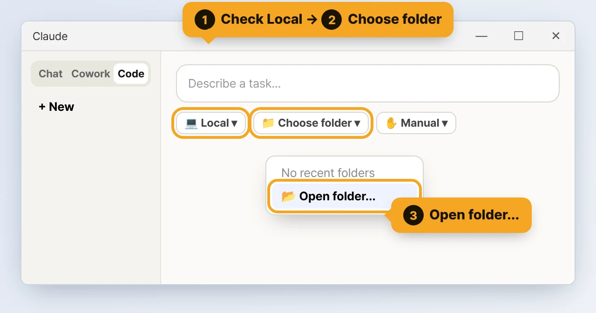
- When the folder window opens, click Desktop on the left.
- Click the Practice folder once, then click Select Folder (Open on a Mac) at the bottom.
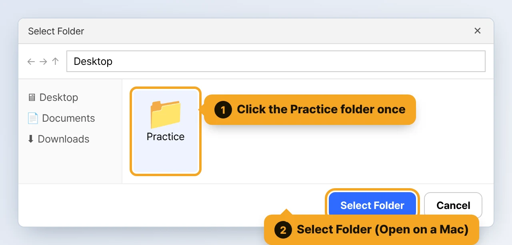
7. Give it a first task
Type this in the box and press Enter.
Create a file called todo.txt and write 3 example to-dos for todayClaude asks permission before creating the file. A card shows what it will create; the green lines are what will be added. Check it and click Allow.
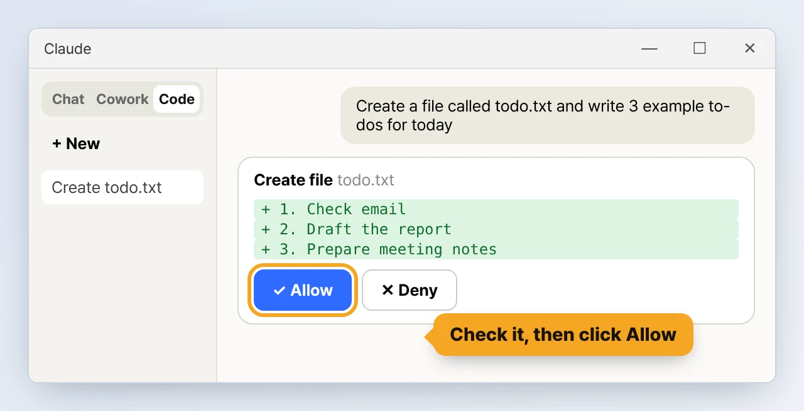
The button names can differ between app versions (Allow, Accept…). Click the one that gives permission (usually blue).
8. See the result with your own eyes
Open the Practice folder on your desktop. The todo.txt file is there.
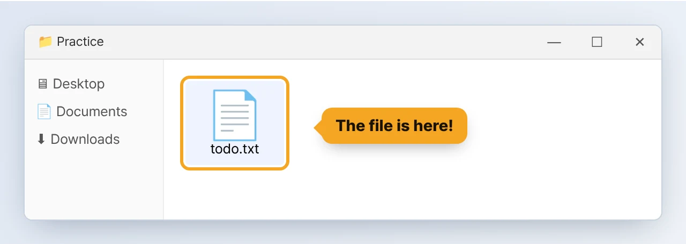
9. Finish
Just close the app. Today's conversation stays in the list on the left, so next time you can open the app, click it and carry on. (More in a later guide.)
If something goes wrong
| If this happens | Do this |
|---|---|
| You can't see the Code tab | Check you signed in with a paid (Pro or higher) account. Update the app to the latest version and open it again. |
| It says "Git is required" | On Windows, install Git for Windows from the link shown, then reopen the app. |
| The file appeared somewhere else | Check that you chose the Practice folder in step 6. You can also ask Claude, "Where did you create todo.txt?" |
| It creates files without asking | The permission mode under the typing box may not be Manual. Click it and choose Manual. |
Curious about using it in the black text window (terminal)? See the terminal course (advanced).
In the next guide you'll have it edit the file and learn how to check what changes.